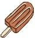

[아이스바]
요즘 회사에서 아이스바를 만들어 먹고 있다.
재료는 다음과 같다.
1. 아이스바 틀
2. 전지분유 (혹은 탈지분유)
3. 물엿 (요리당이나 올리고당 같은 제품도 좋다)
4. 설탕 (백설탕이든 흑설탕이든)
5. 딸기/초코 시럽 (시럽이 없으면 밀크 아이스크림이 된다)
6. 물
모두 대형 할인마트에 가면 손쉽게 구할 수 있는 것들이다.
혼합 비율은 말 그대로 '적당히' 다. 그냥 만들다보면 조금씩 감이 온다.
내가 만들어 먹는 딸기바는 대충 이렇다.
전지분유 : 올리고당 : 백설탕 : 딸기시럽 = 10 : 3 : 5 : 1
사실 그냥 감으로 퍼 넣는거라 정확히는 모른다. 그래도 맛있다!
우유나 연유를 넣어도 맛있다.
아이스바를 더 쉽게 만드는법은 바나나에 나무젓가락을 꿰고 랩에 싸서 냉동실에 얼리는 방법이다.
여름을 시원하고 재미나게 나는 방법.
아이스크림 만들어 먹기. 강력 추천!!